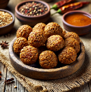
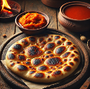
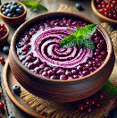

Aspakei
Aspakei
La cucina
Una caratteristica distintiva della cucina Kondo è l'enfasi posta sulla grigliatura, l'affumicatura e l'arrosto su fiamme libere. Questo metodo conferisce un sapore intenso
e affumicato a carne, pesce e verdure, che vengono spesso gustati con erbe selvatiche e spezie. Il processo di cottura in sé è tanto un rito quanto un metodo di preparazione,
La base della maggior parte dei pasti Kondo trova le sue radici in tuberi, cereali, legumi, funghi, e ovviamente carne. Questi ingredienti sono alla base del sostentamento
quotidiano, fornendo nutrimento ed energia alla comunità. Funghi selvatici, radici e grano vengono raccolti con cura dall'ambiente circostante, garantendo che i pasti siano
nutrienti e strettamente legati alla terra. Il condimento è quasi un'arte nella cucina Kondo, con forti infusi di erbe e spezie calde. Pepe affumicato, menta selvatica e
salvia di montagna sono alcuni degli ingredienti più pregiati. Queste erbe vengono spesso trasformate in infusi o utilizzate per condire carni e verdure. I sapori sono
complessi, un mix di affumicatura, sapidità dei cibi fermentati e calore delle erbe aromatiche, creando un profilo gustativo ricco quanto la cultura stessa.
I pasti sono un momento di incontro e connessione. La condivisione del cibo è vista come un segno di fiducia, unità e rispetto, ed è attraverso questi pasti condivisi che
i legami si rafforzano e i legami comunitari si rafforzano. Durante i pasti comuni, come il pasto principale consumato nel pomeriggio, il cibo viene spesso servito
in grandi ciotole fumanti, pensate per essere gustate da tutti a tavola. In queste occasioni il pasto include tipicamente uno stufato, pane abbondante e un contorno, il tutto servito
insieme, sottolineando la natura comune della cena.
A colazione il pasto è più semplice, spesso consiste in una focaccia con formaggio o un porridge di cereali, offrendo un inizio di giornata leggero ma sostenuto.
La cena è più piccola in porzioni, pensata per essere nutriente ma non eccessivamente saziante, spiedini alla griglia, gnocchi o una zuppa calda e speziata forniscono
una conclusione confortante della giornata. I pasti festivi invece sono tutt'altro. Questi grandi banchetti vengono preparati per occasioni speciali e cerimonie,
con piatti a strati che mostrano l'abilità e la cura del cuoco. Gli involtini di carne glassati al miele, ricchi dei sapori del fuoco, vengono serviti insieme a dolci
che bilanciano l'affumicatura delle carni con la loro delicata dolcezza.
Il Folako
Il folako è un tradizionale cibo a base di insetti macinati arrostiti mescolati con cereali abbondanti e spezie profumate. L'impasto viene modellato in piccole
tortine rotonde, poi grigliate fino a quando la parte esterna diventa croccante e dorata, mentre l'interno rimane denso e ricco di sapore. Questi piatti sono
spesso serviti con una salsa piccante che ne esalta il gusto. Il folako è uno spuntino popolare tra viaggiatori e lavoratori, apprezzato per il suo alto contenuto
proteico, la sua trasportabilità, e il suo costo ridotto. Viene comunemente venduto nei mercati e nelle bancarelle di cibo di strada, dove i venditori lo preparano
sul momento.

Il Koltako
Il kaltako è una focaccia tradizionale dal sapore rustico e artigianale. Ha forma rotonda con bordi leggermente irregolari, viene cotto a fuoco vivo fino a raggiungere un
colore bruno dorato con macchie carbonizzate. La consistenza è croccante, con un sottile sapore affumicato. Viene sempre servito con una pasta di radici vegetali
caratteristica, che ha una tonalità arancione intenso e una consistenza ricca e liscia. Quest'ultima unisce sapori dolci e speziati, ottenuti da tuberi tostati
lentamente mescolati con erbe aromatiche e un pizzico di spezie fermentate. Il Kaltako viene comunemente consumato come piatto base, abbinato a varie carni, stufati
o gustato da solo. Ha un significato culturale nei festival, dove viene spesso preparato fresco e condiviso tra le famiglie.

Il Lusako
Il lusako è una zuppa rinfrescante, di colore rosso porpora intenso, a base di purè di frutti di bosco ed erbe aromatiche, servita fredda. La consistenza è liscia ma
leggermente densa, con bacche tritate che forniscono dolcezza. Viene di solito aggiunto un filo di latte, che aggiunge un contrasto ai ricchi sapori di frutti di bosco.
Guarnito con foglie di menta fresca, il lusako è un popolare piatto estivo, spesso gustato durante feste e sagre all'aperto. Viene tradizionalmente servito in rustiche
ciotole di terracotta, sottolineando il suo legame con la natura e gli incontri stagionali. Alcune variazioni includono un pizzico di miele o scorza di agrumi per una
maggiore complessità.
